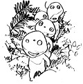
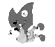
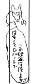

制作日誌 1996年5月
96.5.01（水）
今日からテレコムの田中敦子さんが出向で「もののけ姫」に参加。絵コンテ、キャラ表を見てもらった後、午後から作打ちを行う。CUT877～934まで58カット分。しかし出向期間が半年しかないのに58カットの原画ができるのだろうか？1カ月に10カットづつ上げて行かねばならないのだ。
96.5.02（木）
今日は第三回「人間は何を食べてきたか」 馬鈴薯（じゃがいも）の上映会を行う予定であったが、野崎さんが不用意にも、ジブリのバミューダトライアングルと呼ばれている会議室にビデオを置き忘れてしまったため、見事に紛失、急遽「エチオピアの岩窟教会」を観る会に変更。お詫びに野崎さんのおごりでピザが配られる。
96.5.04（土）
メインスタッフの他、篠原、大塚、遠藤、倉田、笹木、山森、武重、片塰、百瀬の各氏が出社。
96.5.06（月）
夕食に篠原さんがスパゲッティを作って休日にもかかわらず今日出勤している全員にご馳走してくれる。全員で机を囲んでイタリア式の夕食をとる。
鈴木プロデューサーがアメリカから帰国、早速ジブリに出社してくる。「もののけ姫」のディズニー配給による全世界公開が決定したもよう。「金が儲かるんならいいんじゃない」とクールな反応の宮崎監督がさっそく極秘事項だというのに社員にふれまわっていた。
96.5.07（火）
宮崎監督の勧めで、北条民雄の短篇集「命の初夜」を読む。死に対峙した若者の、一種開き直りにも似たガラスのような透明感が印象に残る作品集である。 宮崎監督、野崎さんは、最後の「望郷歌」が気にいったようだが、私は表題作がベストだと思う。しかしこれを書いたのが20代前半か …。
96.5.13（月）
大塚伸治さんの打ち合わせが行われる。CUT589～607まで19CUT。
96.5.14（火）
野崎さんが企検用オリジナルの原稿第一縞を書き上げる。やけに早いがけっこう面白いので、分量的にもうちょっと増やして企検にかけることにする。
久石譲氏が来社。持参したイメージアルバムの曲を聞きながら、宮崎監督を交えて話し合いを行う。
96.5.16（木）
鈴木さん経由で、徳間社長にトトロマークを徳間の名刺に使わせてくれ、と頼まれた宮崎監督、「徳間にはこのマークが最適」と手には羽、足には団扇をつけたひげちょびんの男がぱたぱたと空を飛んでいるマークを新たに考案。早速鈴木さんが徳間社長に見せたところ、なんと見事に採用となる。

96.5.20（月）
本日で石曽根君の制作の研修が終了。明日からは演助の研修が 始まる。
昨日見て感動した映画「ウェールズの山」の話を制作部の人間にしていたら、偶然にも出版部野崎さんもその映画を見に行きいたく感激したらしい。さらに宮崎監督も、昨日会った上條恒彦さんに「ウェールズの山」はいいですよー、とさんざん聞かされたそうである。
96.5.21（火）
飯田馬之助さんがクラナドのＣＤをもってくるが、宮崎監督が気に入り「もののけ姫」に使いたいなーと言い出す。早速飯田さんに「売れ」と無理やりＣＤを買い取る。飯田さんのも含めて鈴木プロデューサーから4枚買ってこいとの指示が出る。
96.5.22（水）
片塰、百瀬、奥井、野崎、石井君とプロダクション・アイジーへコンピューターの見学に行く。一通り見学したあと、押井守氏と懇談。「デジタルペイントのシステムについては、ジブリは率先してやらなければいけない立場にいる。この業界でそれらの金銭的リスクに耐えられるスタジオは他にはないのだ。またジブリがあるシステムを採用すれば、他のスタジオはそれについてくる」と力説していた。また「やるなら精神的な援助は惜しまないよ」とパトレイバーの後藤隊長みたいなことも言っていた。押井さんの話を聞いていると、ジブリはそうしなければいけない、という気分になってくるところが恐ろしい。まったく押井さんの話し方には天才的な説得力がある。
（絵コンテ・cut976のわきに描かれた落書き)

96.5.23（木）
絵コンテCUT935～976まで42CUTＵＰ。総秒数82分53秒19.92コマ。
野崎さん原作の企画検討会が行われる。 野崎さんの心配をよそに、新人を含めて15人位の人が集まり大盛況。原作がまとまり切っていなかったことと、宮崎監督がちょこちょこしか顔を出さなかったため、企検始まって以来の激しい議論となる。野崎さんが煮詰めて再び企検に出すことに。
96.5.24（金）
次回の企検は宮崎監督レポーターの「ごん太を殺せ！」に決定。果たして活発な意見交換が成されるのか。
96.5.25（土）
「Ｃパートは終わり」と言っていた絵コンテの追加が上がる。CUT977～998まで22CUT。合計で1,004CUT、85分35秒7.92コマ。
近藤喜文さんが社員にアイスクリームをおごる。
箕輪さん打ち合わせ。CUT951～970まで20CUT分。
清水さん打ち合わせ。CUT977～998まで22CUT分。
96.5.27（月）
休日。夕食に休日には、恒例となりつつあるスパゲッティが出る。料理長はもちろん作監の高坂氏。
96.5.28（火）
宮崎監督が考え付いた新雑誌「がじ」（意味は"がんこじじい"）の企画を出版部に出す。これは徳間が出している「Jマーカー」の対極をなすような雑誌で、宮崎監督によれば「下流のヘドロを相手にせず、ヘドロを浄化する一本の葦たらん。好み、遊び、教養、全てに亘り孤立をおそれず、 哄笑と透明なニヒリズムと 知性の総合誌」とのこと。これだけでは何の雑誌か皆目見当もつかないが、ようするに現代の軽薄な流行に乗らずに「これがよいのだ」というある意味での哲学を紹介する雑誌なのである。
96.5.29（水）
宮崎監督がおでんを作り、午後6時ころスタッフに配る。
| 次のページへ |
| 日誌索引へ戻る |
| 「もののけ姫」トップページへ戻る |